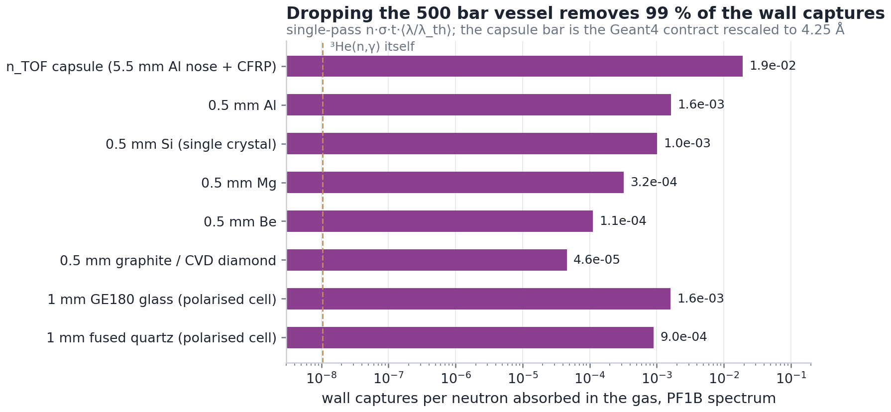
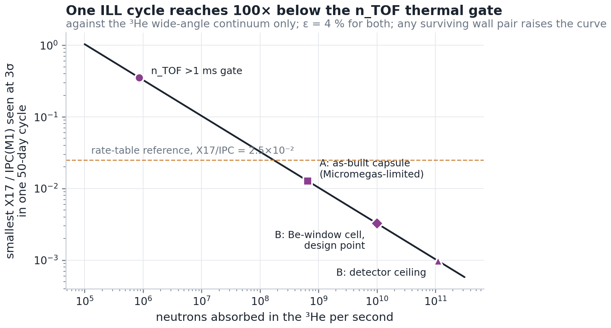

The same physics as n_TOF's >1 ms gate · no flash · no duty cycle · and no reason left for a 500 bar vessel
Feasible, and the only way the thermal measurement becomes a statistics-rich one — but it is the s-wave half of the physics only. Everything a reactor gives us is below 0.1 eV, which is exactly n_TOF's >1 ms gate, so the signal side is already settled: per neutron absorbed in the gas, 4.8×10⁻¹¹ pairs (2.9×10⁻¹² above 109°), whatever the wavelength. What changes is the neutron count. With the capsule unchanged, PF1B is Micromegas-limited at 6.5×10⁸ n/s — one ILL day is 756 n_TOF gate-days. Replace the 500 bar vessel with a few-bar cell behind a 0.5 mm Be window, which a reactor beam allows and n_TOF's never did, and the wall captures fall to 0.6% of the capsule's; at a conservative 1010 n/s that is 11,601 gate-days per day. One cycle then reaches X17/IPC(M1) of 3.3e-03 against the ³He continuum, against 0.35 for n_TOF's thermal gate over the same 50 days. What it cannot do is reach the p-wave states (0−, 1−, 2−) that the ATOMKI ³H(p,e+e−) fit is built on. That is n_TOF's MeV window, and the ILL does not replace it.
Below a few eV both ³He channels and every wall capture go as
1/v. Two consequences follow, and they are what this whole page rests on.
The gas is wavelength-blind: it absorbs essentially every neutron that
enters, and the fraction of absorptions that are radiative,
55 µb / 5333 b = 1.03e-08, is a ratio of two
1/v cross sections. The pair yield is set by the two s-wave channels in
ipc_channels: M1 from the 1+ (³S₁) and E0 from
the 0+ (¹S₀), 22% E0. None of it moves
between n_TOF's gate and a cold beam. A thin wall is not wavelength-blind:
its capture probability per neutron goes as
nσtht⟨λ/λth⟩.
For the EAR2 in-gate flux that weight is 0.65 (computed from the
Ph3 flux file; a 5.5 mm Al nose then gives 4.96×10−3
against the Geant4 contract's 4.99×10−3). At PF1B it is
2.36. So the same capsule makes 3.6× more wall background per
absorbed neutron at the ILL, and that factor is the bridge that carries every
Geant4 number across.
| beam | capture flux n/cm²/s | mean λ | particle flux n/cm²/s | cross-section | whole beam n/s |
|---|---|---|---|---|---|
| PF1B (H113, cold, unpolarised) | 2.0×10¹⁰ | 4.25 Å | 8.5×10⁹ | 120 cm² | 1.0×10¹² |
| PF1B polarised (99.7 %) | 3.0×10⁹ | 4.25 Å | 1.3×10⁹ | 48 cm² | 6.1×10¹⁰ |
| FIPPS (H22, thermal pencil) | 1.3×10⁸ | 2.30 Å | 1.0×10⁸ | 2 cm² | 1.8×10⁸ |
The capture flux is the thermal-equivalent flux that 1/v rates scale
with. The opaque gas counts particles, not capture flux, so particle flux is the
capture flux divided by λ/λth. The FIPPS wavelength is an
assumption (thermal guide H22). Fluxes are quoted at full power. The 2025–26
cycles ran at 41–56 MW against ~57 nominal. That matters only when
the beam is the binding limit, and for PF1B it is not.
FACILITY.md has the sources and everything else found about the
site.
| scenario | beam on the spot | DREAM ≤ 1 kHz | Micromegas ≤ 10 % pile-up per µs |
|---|---|---|---|
| A: capsule @ PF1B | 2.7×10¹⁰ | 6.6×10⁸ | 6.5×10⁸ |
| A: capsule @ FIPPS | 1.8×10⁸ | 1.2×10⁹ | 1.2×10⁹ |
| B: Al-window cell @ PF1B | 1.7×10¹¹ | 7.6×10⁹ | 7.5×10⁹ |
| B: Be-window cell @ PF1B | 1.7×10¹¹ | 1.1×10¹¹ | 1.1×10¹¹ |
| B: C-window cell @ PF1B | 1.7×10¹¹ | 2.7×10¹¹ | 2.7×10¹¹ |
| B: Be-window cell @ PF1B, 46 MW | 1.4×10¹¹ | 1.1×10¹¹ | 1.1×10¹¹ |
| B: Be-window cell @ PF1B, design point | 1.4×10¹¹ | 1.1×10¹¹ | 1.1×10¹¹ |
Three ceilings, each on the neutrons absorbed per second. Beam: the particle flux on the target face. That is a Ø20 mm spot for the capsule, 20 cm² for a cell, and never more than the whole guide. Trigger: the production thermal menu (2 SiPM legs ≥ 0.5 MIP + ≥ 1 plastic at 1 MIP) fires on 4.2e-07 pair-tags per neutron at n_TOF. DREAM is held to 1 kHz, which is about what it ran in a beam burst; a sustained continuous rate has never been measured. Micromegas: the Geant4 rate of prompt drift-gap charge, shared over four arms, with at most 10 % chance of a second event in a 1 µs drift window. With the capsule the trigger and the chambers bind together at 6.5×10⁸ n/s, well below what PF1B can deliver to a 2 cm spot, so the capsule wastes most of PF1B. FIPPS's halo-free pencil beam fits the capsule's bore almost exactly, and there the beam binds at 1.8×10⁸ n/s, which is still 208 gate-days per day.

The 500 bar vessel was forced by n_TOF: the gas had to be opaque at eV energies with only a 2 cm bore, so the ³He went to 500 bar and the nose went to 5.5 mm of aluminium. At 4 Å the gas is 11,000 b per atom. A few bar absorbs everything within centimetres:
| ³He pressure | 2 Å | 4.25 Å | 6 Å |
|---|---|---|---|
| 0.25 bar | 27 cm | 13 cm | 9 cm |
| 1 bar | 6.7 cm | 3.2 cm | 2.2 cm |
| 3 bar | 2.2 cm | 1.1 cm | 0.75 cm |
| 10 bar | 0.67 cm | 0.32 cm | 0.22 cm |
Three things follow from that table.
(i) The window can be thin and need not be aluminium. 0.5 mm of Be,
a standard pressure-window material that is also transparent to coherent
scattering above its 3.96 Å Bragg edge, makes 172×
fewer captures than the nose. External conversion in the window falls a further
44× (t/X0).
Graphite or CVD diamond is better again, and its 4.95 MeV line is the
softest on offer.
(ii) The cell is its own beam stop. An opaque ³He volume makes no
capture γ except the one we want, so there is no downstream wall at all.
That is the reason ³He beam stops are used at PGAA stations.
(iii) Below ~0.3 bar the source has length. The absorption length
becomes longer than our pair-vertex blur along the beam (~28 mm, from
ntof_athens_26/pair_vertex_imaging). Window-born pairs then sit at
one end of a measured distribution instead of on top of the gas pairs, as they
did at 500 bar, where half the absorptions are within 0.19 mm of the
nose. The cost is an extended source in a detector built around a point source,
and that trade is exactly what the simulation has to settle.
| scenario | absorbed n/s | set by | n_TOF gate-days per day | ³He pairs >109° made per day | X17 in the trigger per cycle, at the reference | smallest X17/IPC 3σ, one cycle | trigger Hz | S/B at trigger reference X17 : pair-tags | tritium GBq per cycle |
|---|---|---|---|---|---|---|---|---|---|
| A: capsule @ PF1BGeant4, rescaled | 6.5×10⁸ | micromegas | 756 | 164 | 106–186 | 0.013 | 994 | 2.5×10⁻⁸ | 5.02×10⁻³ |
| A: capsule @ FIPPSGeant4, rescaled | 1.8×10⁸ | beam | 208 | 45 | 29–51 | 0.024 | 148 | 4.6×10⁻⁸ | 1.38×10⁻³ |
| B: Al-window cell @ PF1Banalytic scaling of the Geant4 contract | 7.5×10⁹ | micromegas | 8,750 | 1,902 | 1,230–2,153 | 3.8×10⁻³ | 994 | 2.9×10⁻⁷ | 0.0581 |
| B: Be-window cell @ PF1Banalytic scaling of the Geant4 contract | 1.1×10¹¹ | micromegas | 1.3×10⁵ | 2.8×10⁴ | 1.8×10⁴–3.2×10⁴ | 9.8×10⁻⁴ | 994 | 4.2×10⁻⁶ | 0.861 |
| B: C-window cell @ PF1Banalytic scaling of the Geant4 contract | 1.7×10¹¹ | beam | 2.0×10⁵ | 4.3×10⁴ | 2.8×10⁴–4.8×10⁴ | 7.9×10⁻⁴ | 621 | 1.0×10⁻⁵ | 1.30 |
| B: Be-window cell @ PF1B, 46 MWanalytic scaling of the Geant4 contract | 1.1×10¹¹ | micromegas | 1.3×10⁵ | 2.8×10⁴ | 1.8×10⁴–3.2×10⁴ | 9.8×10⁻⁴ | 994 | 4.2×10⁻⁶ | 0.861 |
| B: Be-window cell @ PF1B, design pointanalytic scaling of the Geant4 contract | 1.0×10¹⁰ | design cap | 1.2×10⁴ | 2,521 | 1,631–2,855 | 3.3×10⁻³ | 89 | 4.2×10⁻⁶ | 0.0770 |
| n_TOF EAR2, >1 ms gate (reference)Geant4 | 8.6×10⁵ | beam (duty cycle) | 1.0 | 0.22 | 0.14–0.25 | 0.35 | 0.36 | 9.0×10⁻⁸ | 6.64×10⁻⁶ |

Read the table in this order. Gate-days per day is the only number that does not depend on any signal model, and it is what the ILL is: n_TOF's thermal gate at 756–11,601× the speed, with no flash and no 1–5 ms recovery band. The X17 columns use the rate table's X17/IPC = 2.5×10−2, applied to the M1 pairs only, because a vector, axial or pseudoscalar boson cannot leave a 0+→0+ transition. That number is a reference normalisation, not a prediction, and that is why the next column quotes the smallest ratio a cycle can see instead. S/B at the trigger is the uncomfortable column. The menu's pair-tags are 92 % two Compton photons of one wall capture, and the capsule leaves the triggered sample at 2e-08. The Be cell improves that 172×, but the offline rejection (two MM tracks pointing at the cell, opening angle, LS energy) still has to supply the remaining orders of magnitude, at the ILL exactly as at n_TOF. Wall internal pairs carry at most 6.7 MeV between both legs, so they cannot pass a ≥ 4 MeV-per-leg menu. Tritium: every absorption makes a triton. At the design point the cell holds 0.08 GBq after a cycle, and at PF1B's detector ceiling it holds 0.9 GBq. ILL health physics will want this in the proposal.
Choose the entrance channel. The ³He(n,p) and the E0 pairs come only from the spin-singlet 0+, and the (n,γ) and the M1 pairs only from the triplet 1+. PF1B delivers a 99.7 % polarised beam (at 3×109 capture flux), and the ILL's own Tyrex station fills ³He spin-filter cells at 70–80 %. With both polarised, flipping the neutron spin moves the pair yield between the two channels:
| M1 pairs per absorption spins parallel | M1 pairs per absorption antiparallel | flip contrast Pn = 99.7 % | unpolarised beam on a polarised cell | absorption length parallel neutrons | |
|---|---|---|---|---|---|
| P(³He) = 60% | 3.0× | 0.50× | 6 | 1.7× | 2.5× |
| P(³He) = 70% | 4.1× | 0.45× | 9 | 2.3× | 3.3× |
| P(³He) = 80% | 6.3× | 0.41× | 15 | 3.4× | 5.0× |
| P(³He) = 85% | 8.6× | 0.39× | 21 | 4.5× | 6.7× |
At P(³He) = 75 % the M1 share swings
11× between the two spin states, at the same cell,
detector and background. That measures the E0 fraction directly. It is the
6–52 % band that IPC_MISSING.md cannot close by
calculation, and it is tied to the α-particle monopole matrix element that
ab initio theory does not reproduce. For the X17 search, a V, A or P boson can
only come from the 1+, and an S boson only from the 0+. So a
spin-flip asymmetry in an angular excess would identify the boson's quantum
numbers, which nothing at n_TOF can do. The parallel state also makes the gas
4× more transparent, so that cell must be
longer.
A polarised cell raises the yield even without a polarised beam.
In an opaque polarised cell, the antiparallel half of an unpolarised beam is
absorbed at the front by (n,p). The parallel half penetrates and captures
mostly through the triplet. Per absorbed neutron that gives
2.7× the M1 pairs at
P(³He) = 75 %, the only way found past the thermal
self-shielding ceiling. The price is the cell itself: polarised ³He needs
glass or Si walls, not Be, and those put back ~10× of the wall captures
(POLARISED.md §3). There is also a real in-beam risk, since
(n,p) ionisation relaxes polarised ³He (§5 there).
GEANT_PLAN.md replaces this with a
simulation.Generated by x17_facility_search/ill/make_report.py
from ill_rates.py; the n_TOF side is the Geant4 thermal-accounting
contract (nTof_x17 ntof_athens_26/data/thermal_accounting/accounting.json),
re-checked on every run when that checkout is present.